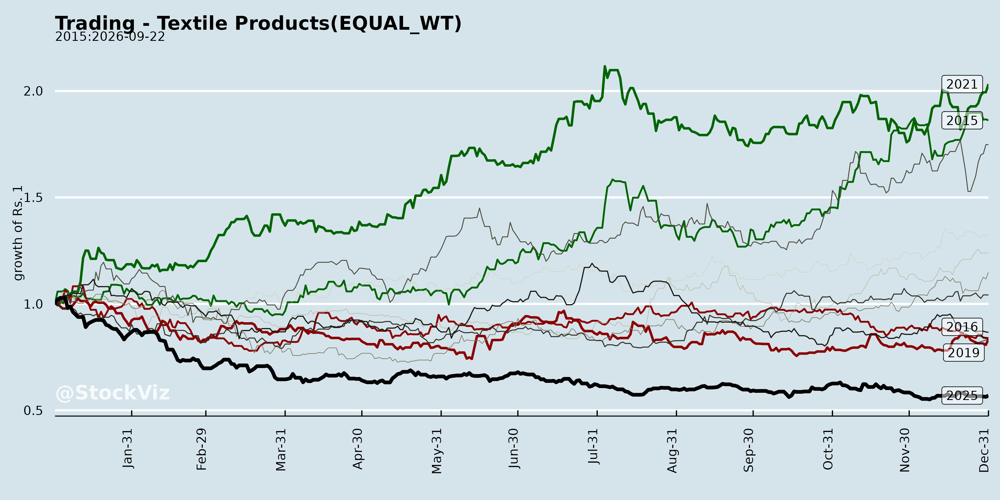
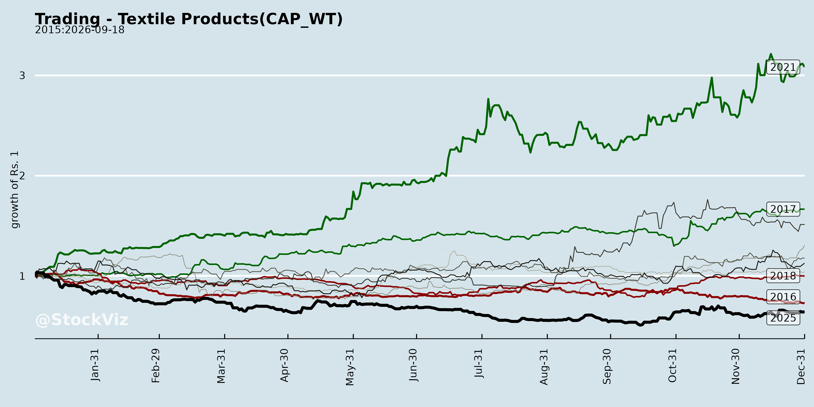
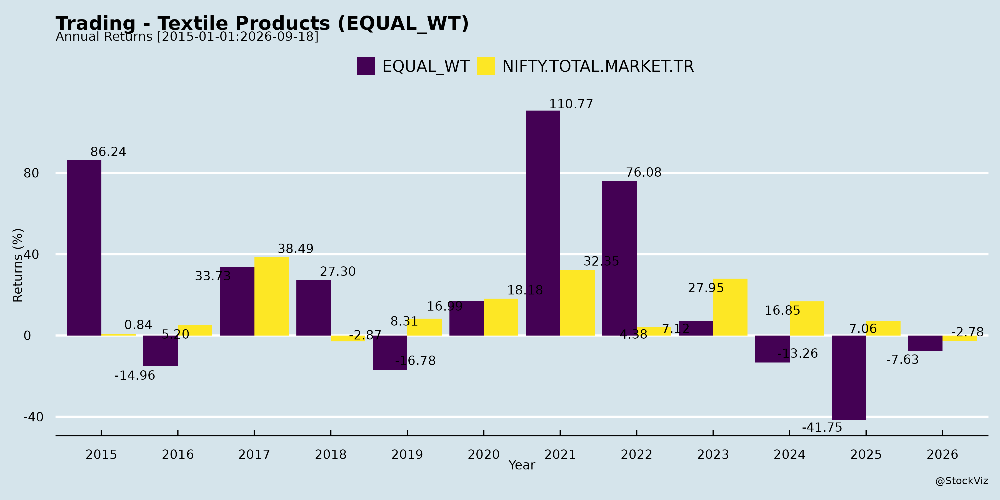
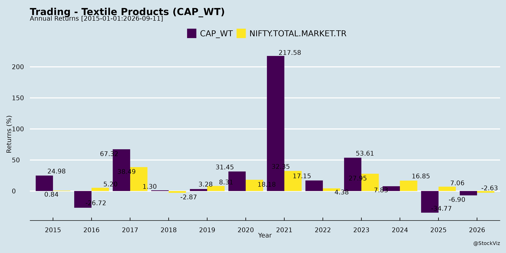
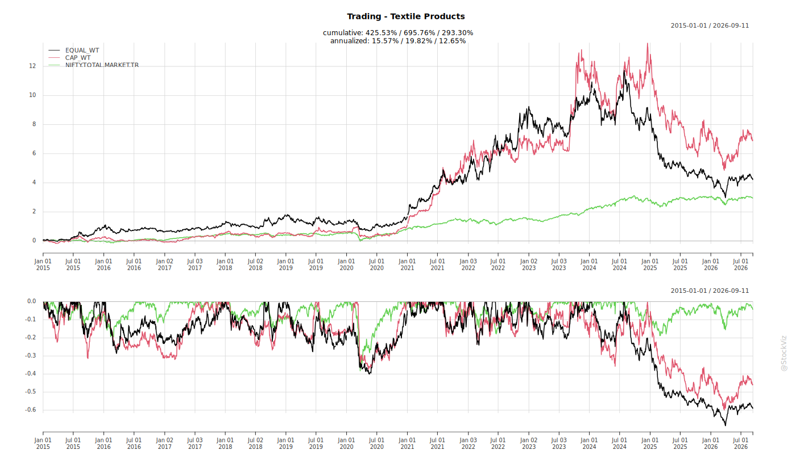
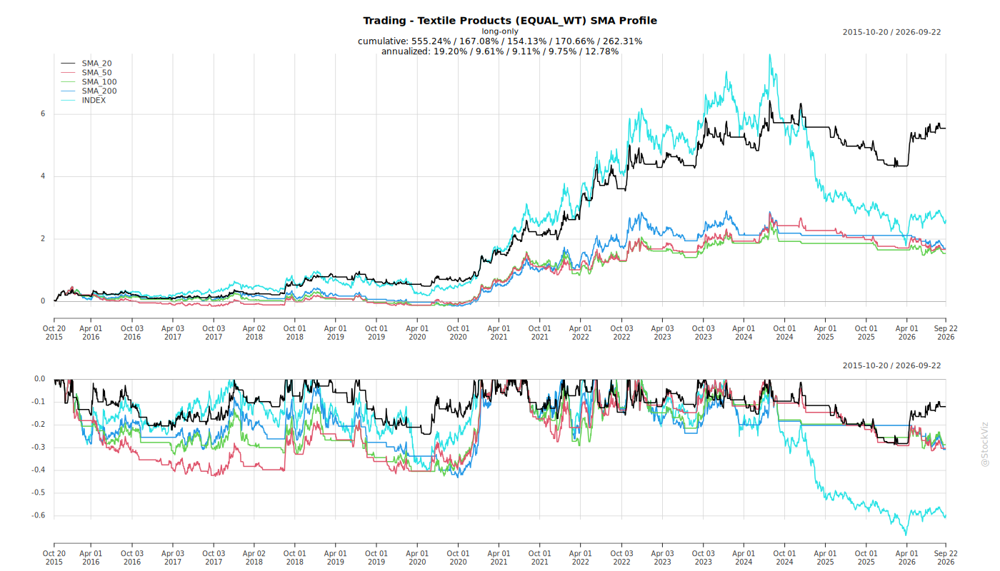
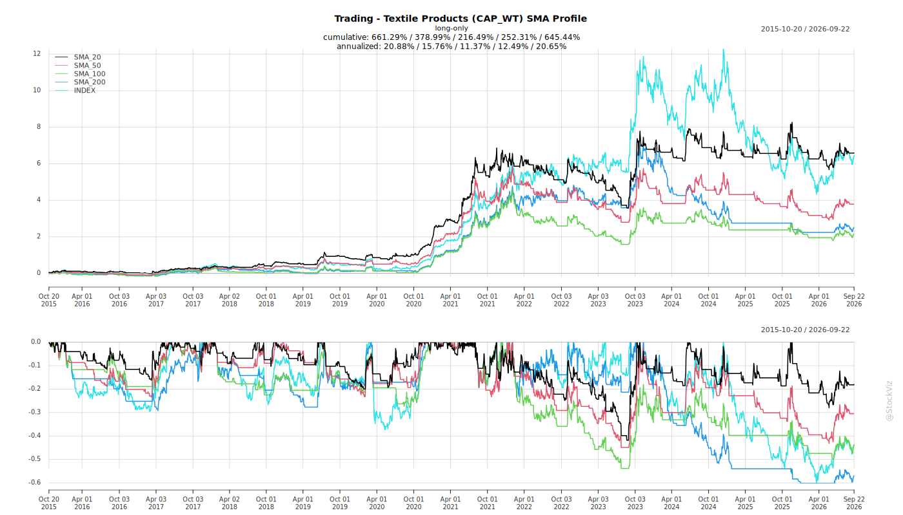
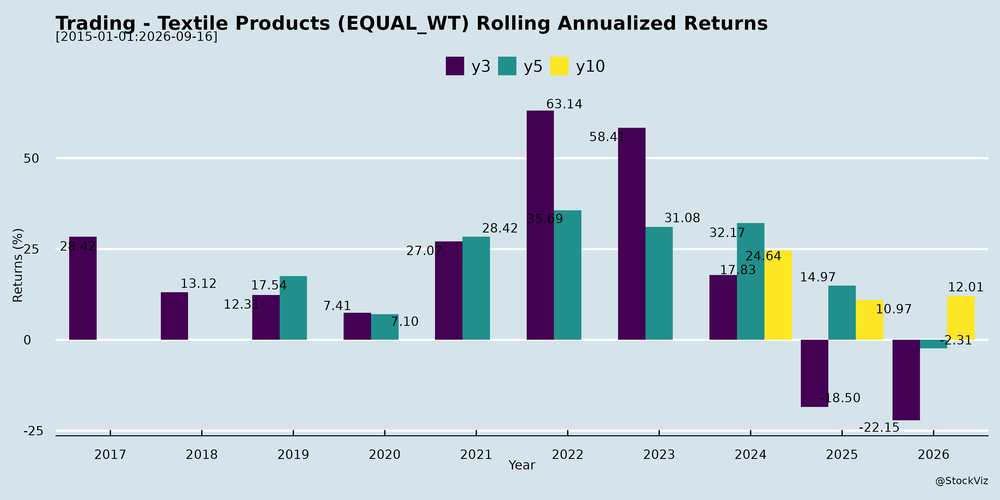
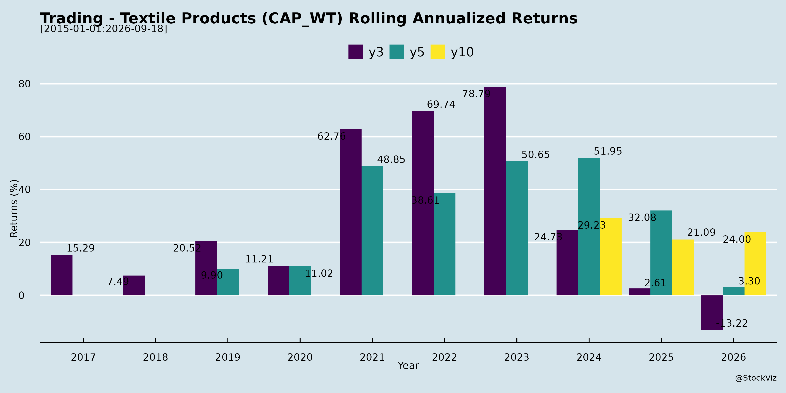

asof: 2026-04-16
The provided sources do not contain information detailing how challenges and opportunities have evolved over time. The documents primarily consist of specific corporate announcements, legal updates, and quarterly financial reports from late 2025 and early 2026.
However, the sources do highlight specific current challenges and opportunities faced by some of the companies during this period:
PDS Limited * Challenges: The company notes that the current business environment is marked by macroeconomic uncertainty and evolving consumer demand [1]. * Opportunities and Strategic Responses: To navigate this environment, PDS Limited is focusing on scaling its business in the US market through strategic inroads and deepened customer engagement [2]. In April 2026, the company secured a Sourcing as a Service (SaaS) contract with a leading US value retailer, which is expected to drive initial sourcing volumes of approximately ₹450crs (~$50mn) [3]. Furthermore, PDS is capitalizing on its investments in AI-led initiatives, digital capabilities, and cost transformation to strengthen its sourcing platform and deliver agile solutions to global retailers [1].
Le Merite Exports Limited * Opportunities: The company identified an opportunity to enhance the liquidity of its equity shares and encourage greater participation from retail investors by making its shares more affordable. To achieve this, the Board approved a stock split, sub-dividing one equity share with a face value of Rs. 10 into five equity shares with a face value of Rs. 2 [4].
The other sources—belonging to SPL Industries Ltd., Heads Up Ventures Limited, and Globale Tessile Limited—focus strictly on quarterly financial reporting, regulatory compliance (such as paying fines for delayed submissions), and legal victories, and do not discuss broader business challenges or market opportunities [5-8].
asof: 2026-04-16
The provided sources offer very limited information regarding the broader headwinds affecting the industry, as they primarily consist of specific corporate filings, financial results, and regulatory announcements. However, one source does briefly touch upon the current market challenges.
According to a press release from PDS Limited, the industry is currently navigating an environment marked by macroeconomic uncertainty and evolving consumer demand [1].
While discussing a new strategic Sourcing as a Service (SaaS) contract with a leading US-based value retailer, Pallak Seth, Executive Vice Chairman of PDS, highlighted these specific headwinds to emphasize the resilience of their business platform amidst a difficult economic landscape [1]. To counteract these challenging conditions, the company is relying on its widespread sourcing network, deep industry relationships, and the ability to deliver agile solutions to remain a partner of choice for global retailers [1]. Furthermore, leadership notes that they are combating these headwinds by making continued investments in cost transformation, digital capabilities, and AI-led initiatives to ensure their operating models remain scalable and efficient [1].
Beyond this single mention, the rest of the sources do not contain relevant information regarding industry headwinds, as they are strictly focused on individual corporate administrative actions, such as stock splits [2], changes to registered offices [3], legal disputes over company names [4, 5], and quarterly financial reporting [6-8].
asof: 2026-04-16
Based on the provided sources, there is no broad market analysis, industry overview, or discussion of general trends to provide a comprehensive understanding of the industry as a whole. The sources consist exclusively of specific corporate announcements, financial results, legal updates, and regulatory filings for a handful of individual companies.
However, based on the specific business operations of the companies mentioned in the sources, we can glean a few key details about the sectors they operate in, which primarily involve garment manufacturing, fashion infrastructure, and trading:
The sources also include documentation for other companies, such as Le Merite Exports Limited and Globale Tessile Limited, detailing corporate actions like stock splits, migrating from SME platforms to the main board, and reporting quarterly financial results [9-11]. However, the sources do not elaborate on their specific operational roles within the industry.
Because the provided sources are strictly limited to corporate financial and legal filings, they do not contain the broad industry insights requested. You may want to independently verify information from outside market research or industry reports to fully understand the key drivers, competitive landscape, and overall dynamics of this industry.
asof: 2026-04-16
The provided sources do not contain information regarding the tailwinds affecting the industry. The documents primarily consist of specific corporate announcements, such as financial results, stock splits, regulatory compliance notices, legal orders, and individual business contracts for companies including PDS Limited, SPL Industries Ltd., Heads Up Ventures Limited, Le Merite Exports Limited, and Globale Tessile Limited.
asof: 2026-04-16
The textile, apparel, and global fashion infrastructure industry is currently navigating an environment marked by “macroeconomic uncertainty and evolving consumer demand” [1]. The general outlook of the industry presents a mixed picture, where several companies are experiencing financial headwinds, yet are actively employing strategic expansion, digital transformation, and capital market initiatives to build long-term resilience.
Financial Pressures and Subdued Earnings The broader macroeconomic uncertainty is directly reflected in the recent financial performance of several companies within the sector. Financial results for the quarter ended December 31, 2025, show significant strain on revenues and profitability across multiple firms: * Heads Up Ventures Limited reported a standalone net loss of ₹60.93 lakhs for the quarter, alongside reporting zero revenue from operations for the same period [2, 3]. Furthermore, the company’s subsidiary has not yet commenced business operations and reported nil revenue [4]. * Globale Tessile Limited reported a net loss of ₹37.20 lakhs for the third quarter, with total expenditure outpacing its operational revenue [5]. * SPL Industries Ltd. reported a net profit of ₹238.42 lakhs for the quarter, which reflects fluctuating profitability when measured against its previous yearly net profit of ₹979.15 lakhs for the year ended March 31, 2025 [6].
Strategic Market Expansion and Technological Integration Despite a challenging economic backdrop, proactive players are focusing on agile solutions, technology, and strategic partnerships to secure future growth. PDS Limited, a major fashion infrastructure platform managing over $2.2 billion in Gross Merchandise Value, highlights that adapting to this volatile environment requires a resilient global ecosystem and widespread sourcing networks [1, 7].
To future-proof its operations and improve its value proposition, PDS Limited is relying on “continued investments in cost transformation, digital capabilities, and AI-led initiatives” [1]. By focusing on robust operating models, the company recently secured a strategic Sourcing as a Service (SaaS) contract with a leading value retailer in the United States [8]. This engagement is expected to drive sourcing volumes of approximately ₹450 crores (~$50 million) with the potential to scale gradually, allowing the company to deepen its customer engagement and make strategic inroads into the US market [8, 9].
Capital Market Strategies to Enhance Liquidity To offset market challenges and boost investor confidence, companies in the sector are also utilizing corporate restructuring to improve stock liquidity and market accessibility. Le Merite Exports Limited recently successfully migrated its equity shares from the SME Emerge platform to the Main Board of the National Stock Exchange (NSE) [10, 11].
To further encourage greater participation from retail investors, the company initiated a 5-for-1 stock split (sub-dividing its ₹10 face value shares into five ₹2 face value shares) [12]. This move is specifically designed to make the company’s equity shares more affordable and enhance overall market liquidity without diluting the existing shareholding structure [13].
In summary, the industry’s general outlook is one of transition and adaptation. While macroeconomic headwinds and evolving consumer habits are currently compressing profit margins [1, 2, 5], businesses are aggressively pivoting by leaning heavily into AI and digital supply chain solutions [1], expanding partnerships in the value-retail space [8], and undertaking capital market restructuring to strengthen investor participation [12, 13].
Copyright © 2023 SAS Data Analytics Pvt. Ltd. All rights reserved.